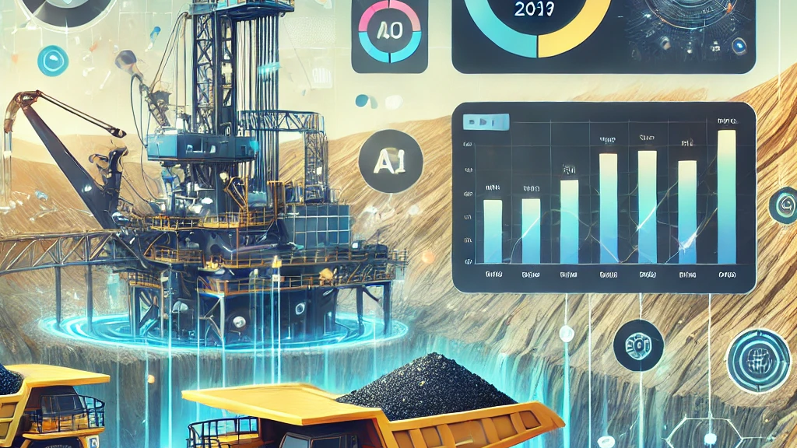

← Back to Projects
REN Mining Process Prediction
Recurrent Equilibrium Network for advanced mining process optimization and prediction
Project Overview
This project was created during a hackathon to help optimize mining operations. By using smart AI, it predicts how much material will be in the bins at each stage of the mining process. The goal is to make mining more efficient, reduce waste, and help teams make better decisions using data.
Features & Components
- AI-powered predictions for mining process outcomes
- Analyzes real industrial data for smarter resource management
- Real-time process optimization and forecasting
- Helps prevent bottlenecks and improve efficiency
- Easy to use and adaptable to different mining scenarios
Technologies Used
Deep Learning
REN
PyTorch
Time Series
Data Science
Python
Industrial IoT
Predictive Analytics
Project Impact
This project shows how AI can make a real difference in industry. By predicting and optimizing mining processes, it helps companies save resources, reduce downtime, and work more sustainably. It’s a great example of how technology can solve practical, large-scale problems.
GitHub Repository
Explore the complete implementation, documentation, and codebase on GitHub:
View on GitHub